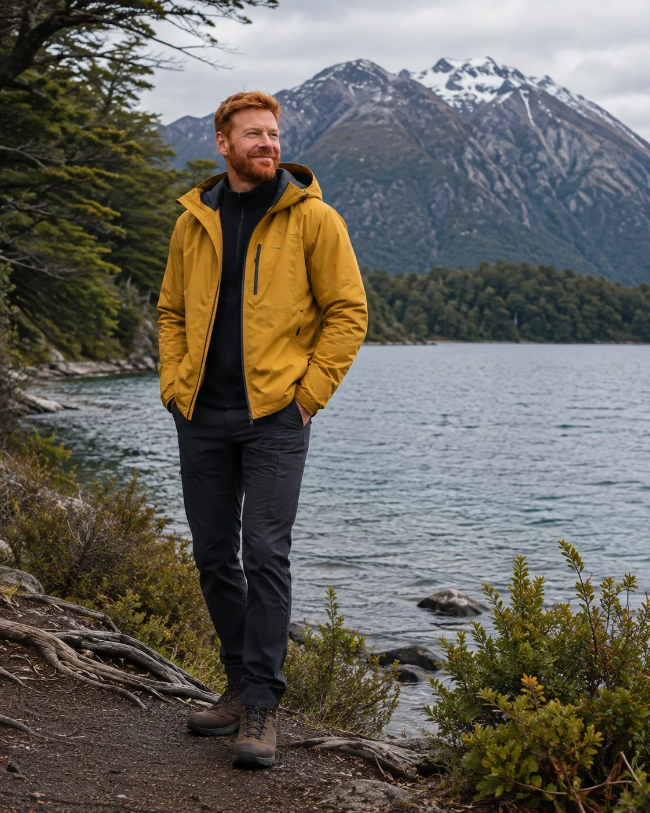
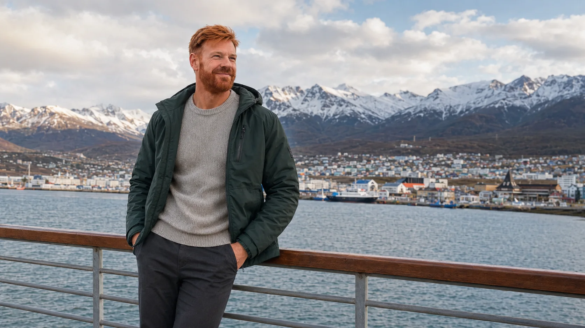
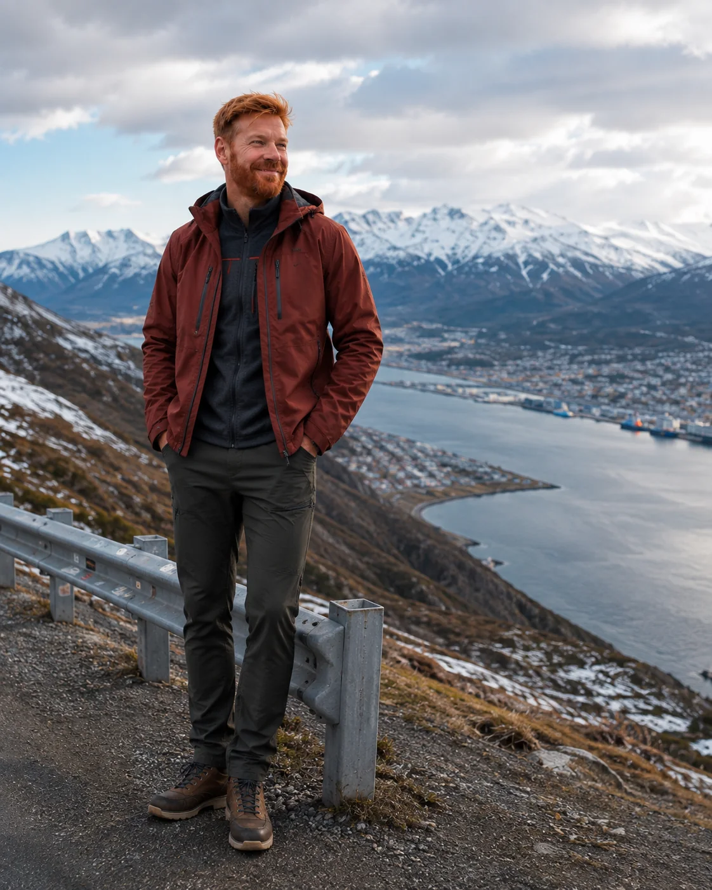

Naturaleza a un paso
Ushuaia funciona porque el paisaje empieza casi en el borde de la ciudad: senderos, agua, bosque y montaña entran en el mismo día.
Ushuaia funciona porque nunca parece una escala cualquiera. La geografía, el clima y el Canal Beagle construyen una sensación real de estar viajando lejos. Mejora mucho cuando la lees como experiencia y no solo como un punto del mapa.

Su mayor fuerza es la sensación de borde del continente. Cuando organizas el viaje con esa idea, el puerto, la carretera, el clima y la escala de la ciudad ganan mucho más significado.
Ushuaia se revela en dos escalas: la ciudad frente al canal y los miradores que explican su posición entre montañas, bahía y extremo sur.

Ushuaia funciona porque el paisaje empieza casi en el borde de la ciudad: senderos, agua, bosque y montaña entran en el mismo día.

Desde lo alto se entiende por qué Ushuaia tiene tanta fuerza imaginaria.
El destino funciona mejor cuando aceptas su lógica local y no intentas imponerle demasiado ritmo urbano.
Los mejores momentos son los que dialogan con paisaje y geografía.
Viento, frío y cambios rápidos forman parte de la experiencia.
Unos pocos momentos fuertes suelen funcionar mejor que un programa rígido y sobrecargado.
Ushuaia gana aún más interés cuando se la pone en relación con otras Argentinas del mismo viaje.
Unas pocas decisiones claras resuelven gran parte de lo práctico.
Dos noches sirven para una primera lectura. Tres o cuatro mejoran la flexibilidad.
Capas, calzado cerrado y protección contra el viento marcan una diferencia real.
Canal, parque, tren o miradores ofrecen tonos distintos.
Una buena ubicación simplifica la operación y permite aprovechar mejor la ciudad a pie.
Sí. El paisaje, el canal y la atmósfera sostienen muy bien el destino en varias épocas.
Puede ser liviano o intenso según el plan. La clave es no sobrecargarlo.
Sí, muchísimo. Los dos amplían la lectura de la Patagonia de formas diferentes.
Funciona en todos los formatos, especialmente si valoras paisaje y contexto.
Mira Ushuaia sobre el terreno antes de cerrar excursiones, temporada y número de noches.
Ver episodio